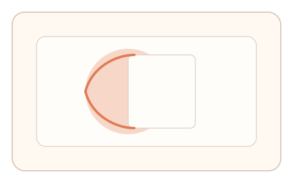
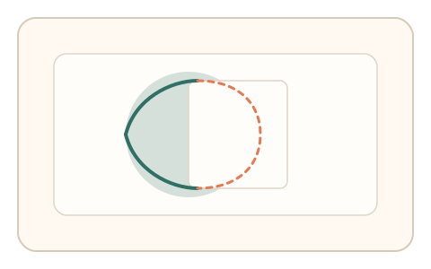
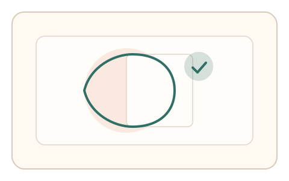

#23
视觉思考范式：空间/结构/直觉
已扩展
遮挡补全描边
利用人类对遮挡形状的自然补全能力，让用户描摹“脑补轮廓”并据此判定真实性。
概念原文
展示被遮挡的图形，让用户沿“脑补的边缘”轻描一圈；系统评估描边的连续性、弧度与完成顺序。
验证人类“视觉补全”的动作痕迹，而非图形识别。
研究背景
视觉系统会自动补全被遮挡物体的轮廓，这种“非明示补全”是稳定的人类感知特征。让用户描摹被遮挡形状的推断轮廓，可将感知补全过程转化为可采集的动作信号。
核心机制
- 呈现被遮挡的简单几何或日常形状，保留部分可见边缘。
- 用户沿“脑补的轮廓”快速描边，允许存在合理偏差。
- 系统评估描边连续性、曲率与完成顺序，强调结构合理性。
用户流程
- 步骤 1：用户看到被遮挡的图形与描边提示。
- 步骤 2：用户沿可见线索补全轮廓并描边。
- 步骤 3：系统评估描边结构与动作节律完成判定。
判定信号
描边连续性与曲率变化
人类补全路径往往连续平滑且符合物体结构。
描边顺序与停顿点
人类常遵循可见线索进行结构化补全。
判定逻辑
以可见边缘为锚，计算描边路径与“可解释补全”集合的相似度；同时检测停顿与回撤是否落在合理位置。
对抗面
- 算法生成补全曲线并自动描边
- 重放已采集的人类补全轨迹
防御与缓解
- 随机遮挡形状与位置，提升样本多样性
- 控制时间窗口并引入轻微动态遮挡，抬高回放难度
- 引入节律与速度曲线作为辅判信号
可达性与风险
为视力或精细控制受限用户提供“形状选择 + 简短拖拽”的替代通道；降低遮挡复杂度。
- 复杂遮挡可能带来认知负担与误拒
- 对低视力用户不友好，需要明确替代方案
可视化状态

状态 1：遮挡形状呈现
部分轮廓被遮挡，保留关键可见线索。

状态 2：补全描边
用户沿脑补轮廓描边，系统采集路径结构。

状态 3：结构判定
评估曲率连续性与补全顺序，输出判定结果。
参考资料
Amodal perception
说明遮挡补全与视觉补全的感知机制。